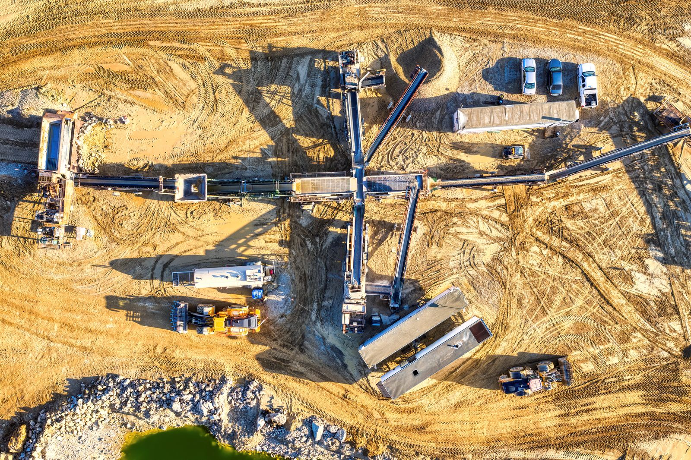
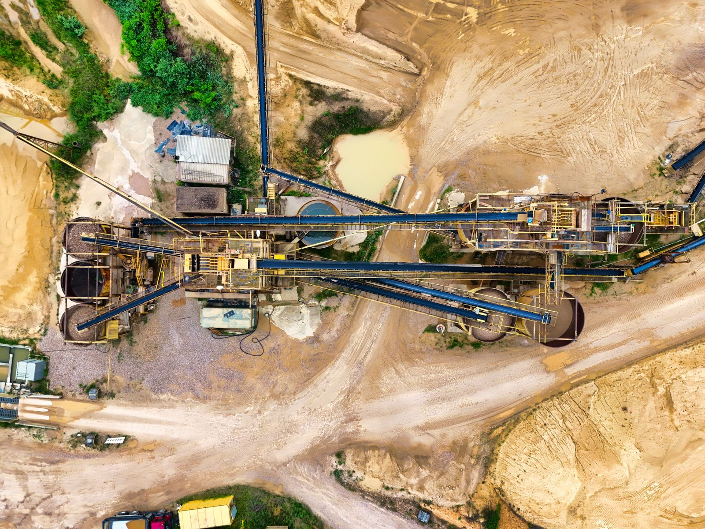
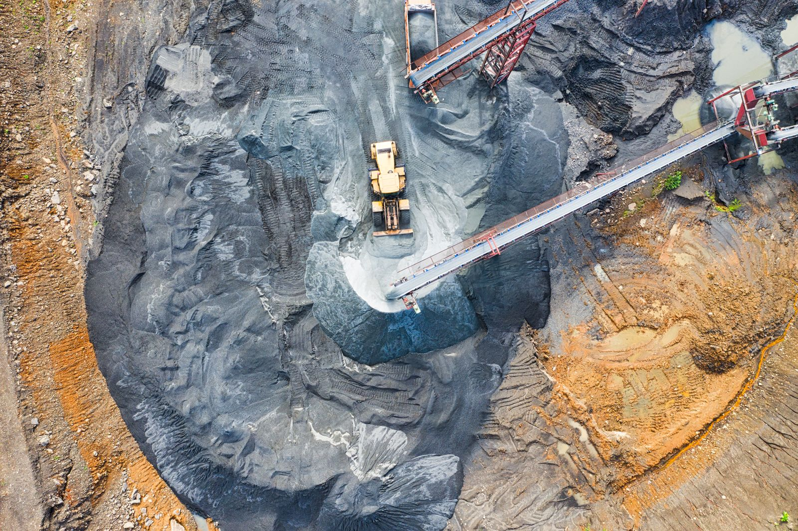
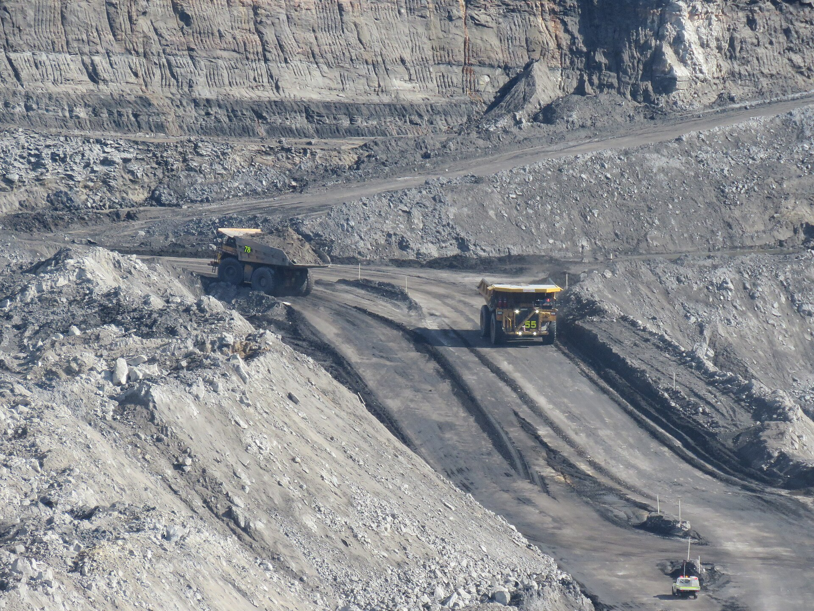

Local access
Our Darra Adam Khel base keeps relationships close and decisions grounded in the real landscape.
A dependable supply and distribution flow — from the coal country of KPK to customers across Pakistan, with export routes ahead.
From the mine face to the road, every step is connected. This animated glimpse is a visual expression of the energy, coordination, and care behind a dependable supply.
We keep the process grounded and direct, so customers know what to expect and our local network stays aligned.
Every load starts in the pit — excavators cutting the bench, loaders stacking the haul truck, and a conveyor network moving material the length of the site. Machine-ready discipline keeps the operation safe, steady, and on schedule.

The systems, routes, and machines that move every load — from bench to market.




Our edge comes from staying close to the work, the customer, and the community that makes it possible.
Our Darra Adam Khel base keeps relationships close and decisions grounded in the real landscape.
Clear expectations and honest conversations are the foundation of every partnership.
We focus on the details that make a supply easier to understand, arrange, and receive.
We are building a stronger, more visible future for a company and a hometown with momentum.
Use these four points to frame a focused conversation before supply and dispatch are coordinated.
Begin with the source, local context, and the material you are looking for.
Share the intended use, preferred grade, and any quality detail that should guide the discussion.
Explain the approximate volume and whether the need is immediate, planned, or recurring.
Tell us where the material needs to go so the delivery conversation starts with the right context.
Let’s talk through your specification, timing, and the most practical next step.
Photos and short films added by the Khaqan team appear here — updated from the Control Room.
No featured media yet. The team can add photos and videos from the Control Room.